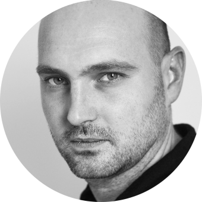

<!--
 <li class="member">  
    <div class="credentials"> 
      <h3>
        Jean-Baptiste TREMOUILLER
    </h3>

     <p>Accessibility consultant and trainer</p>
        <ul class="socials">
      <li><a href="https://www.linkedin.com/in/jean-baptiste-tremouiller-5a37b49a/"><svg class="svgicon social-icon-linkedin" aria-hidden="true" role="img"> <use href="#social-icon-linkedin" xlink:href="#social-icon-linkedin"></use> </svg><span class="sr-only">JB's LinkedIn page</span></a></li>
      </ul>
    </div>
    <div class="text">
    <p>Jean-Baptiste has over 12 years of experience in video game productions. He worked on iconic games such as Assassin's Creed, Rayman or Raving Rabbids.</p>
<p>
Since 2015 he teaches game design, level design, and accessibility in several video game schools across France.
</p>
    <p class="last">Favorite games:</p>
    <ul class="games">
      <li>Mario Bros 1</li>
      <li>Mass Effect 1</li>
      <li>Baldur's Gate 3</li>
    </ul>
  </div>
</li> 
-->